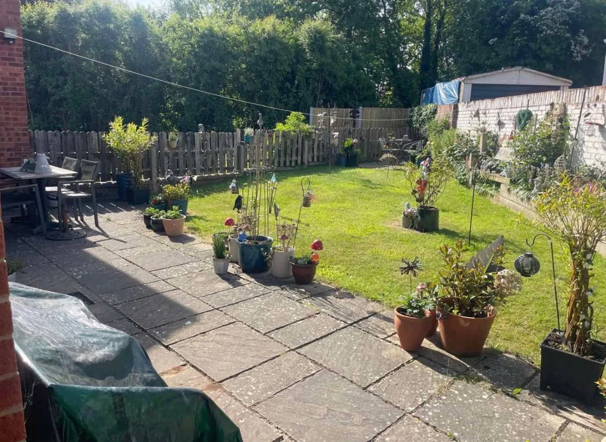
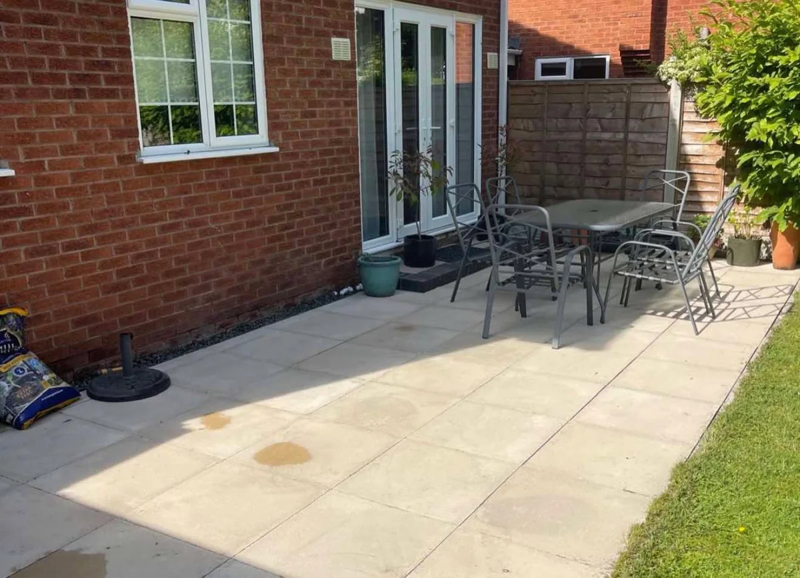
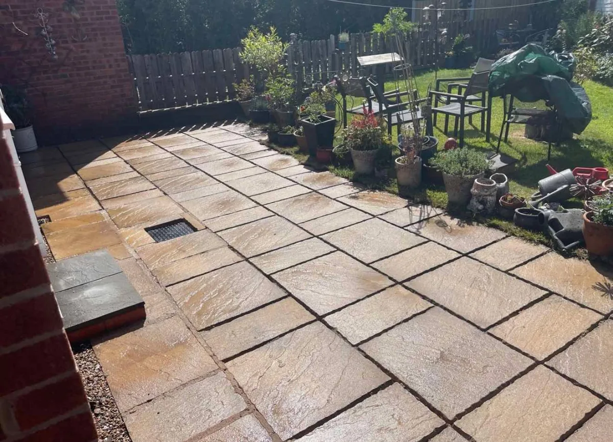
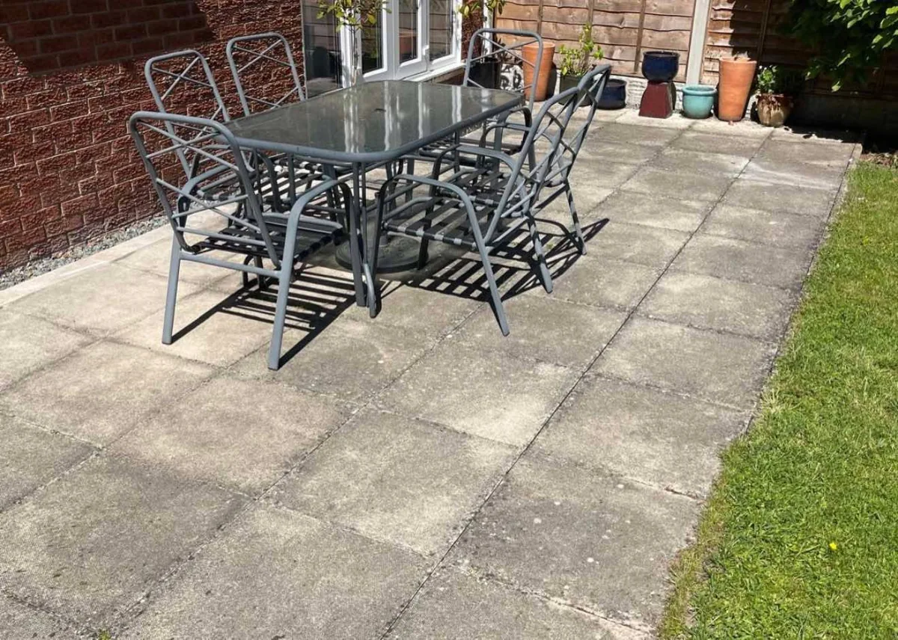
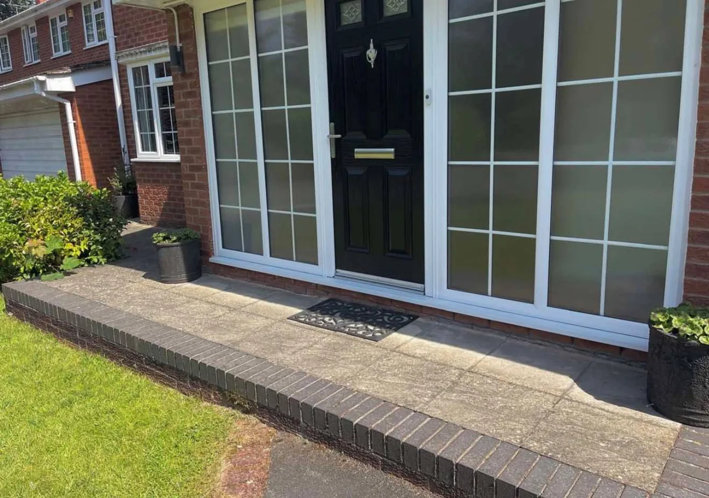
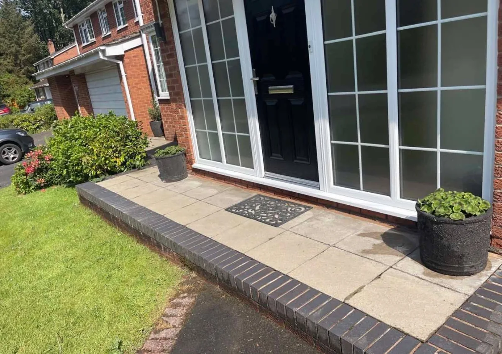

Garden patio


Weathering and surface build-up can leave paving looking tired. LA Fen Scapes offers jet washing for outdoor paved areas, including garden patios, paths and entrance paving. The photographs below show three examples of the difference after cleaning.
From a seating area beside the house to the approach to your front door, cleaning can reveal more of the colour and detail in your paving. Tell us which areas need attention and whether the work forms part of a wider garden tidy-up.
Send your postcode, photographs, an approximate size and any information about access or water availability. Mention damaged slabs, loose joints or other concerns so the surface and suitable approach can be discussed before work is agreed.

See the difference across garden patios and entrance paving. Each pair shows the same area before and after cleaning.




Enquire about patios, paved paths and entrance paving. Send photographs so the material, condition and scope can be discussed.
Include the type of surface if you know it and mention any damage or loose joints. The approach and suitability need to be discussed for your particular paving.
Yes. Describe all the work you have in mind, including garden tidying or maintenance, so the project can be discussed together.
Send your postcode, photos, approximate dimensions and information about access and water availability. Use the WhatsApp form below and attach photos before sending.
Explore our other services: Garden Maintenance · Landscaping · Tree Work
Send your postcode, a few details and photographs of the work you need. This form opens WhatsApp with your message ready for you to send.